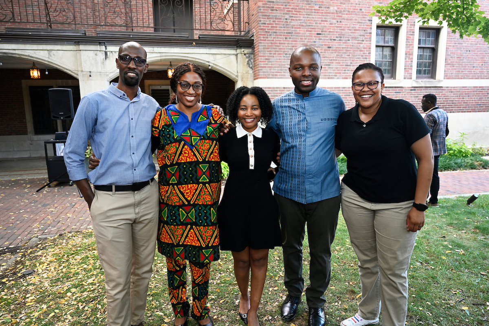
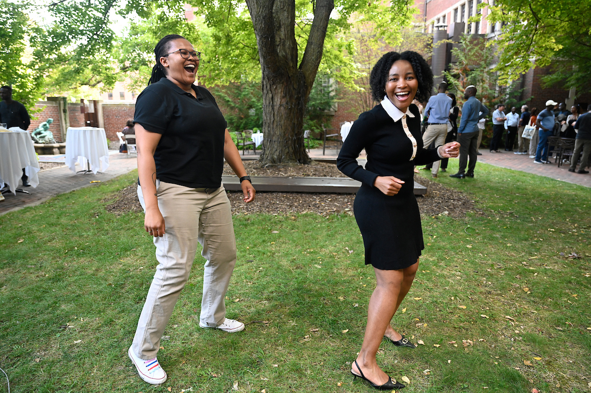

Residency in Ann Arbor
Scholars spend five months at the University of Michigan paired with a faculty collaborator and full access to university resources.

Program Overview
This page brings together core information from the African Studies Center’s public UMAPS materials so visitors can understand the program’s purpose, structure, selection process, and current application model.
At A Glance
Scholars spend five months at the University of Michigan paired with a faculty collaborator and full access to university resources.
ASC runs one annual application round that serves both the August-December and January-May cohorts.
The program is highly competitive, with recent cycles drawing 600 or more applications for around 20 places.
Mission
The U-M African Presidential Scholars program brings early-career faculty from African universities to Ann Arbor to strengthen research capacity, contribute to international academic networks, and build mutually beneficial ties between the University of Michigan and institutions across the African continent.
Scholars are paired with University of Michigan collaborators and use their residency to further work on a research project, an academic degree, publications, a grant proposal, or another relevant scholarly activity.
Structure
Research Themes
Applications
ASC’s application guidance states that UMAPS uses one application round for both annual cohorts. Applicants may indicate a preferred cohort, but placement in a specific term is not guaranteed.
Direct applications are open to faculty in selected countries, while applicants from other African countries require nomination by a University of Michigan faculty member with whom they already have an established relationship.
Impact
ASC highlights UMAPS as a program that helps retain and strengthen faculty in African institutions of higher education while also enriching the University of Michigan through African perspectives and collaboration.
Alumni outcomes described across ASC pages include publications, grant activity, degree completion, promotion, and ongoing scholarly collaboration.
Selection and Support
ASC notes that review and selection are conducted by a multidisciplinary University of Michigan faculty committee. Decisions are based on academic quality, scholarly fit, initiative balance, and support from the candidate’s home institution.
Those selected receive a five-month residency, round-trip airfare, housing, medical insurance, research support, a modest living stipend, office or laboratory space, and the opportunity to present research to the U-M community.
Photo Gallery




Official ASC Resources